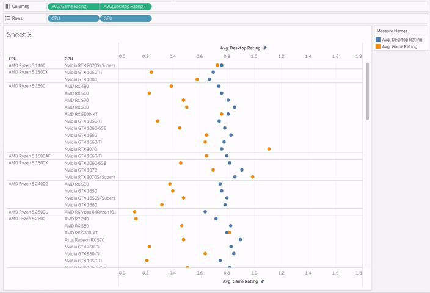
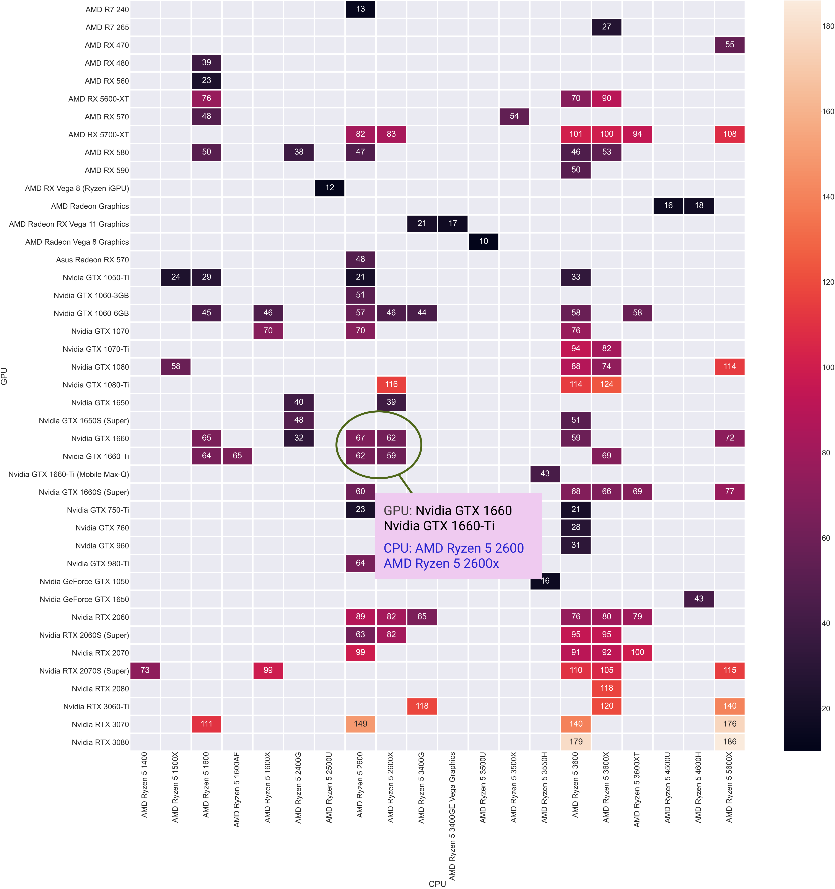
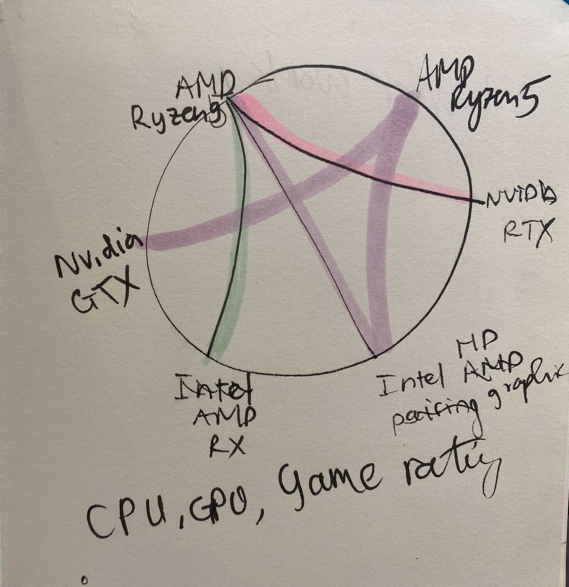
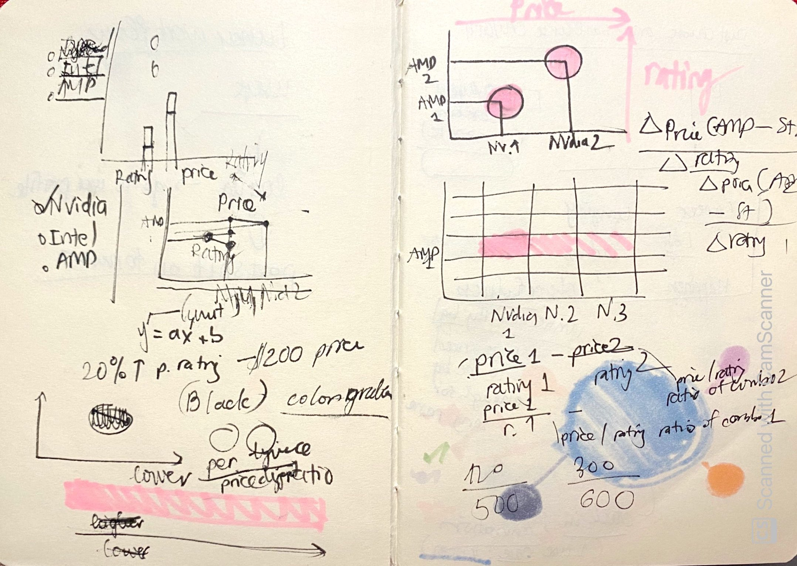
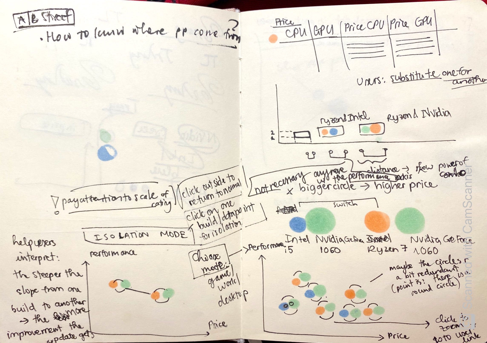
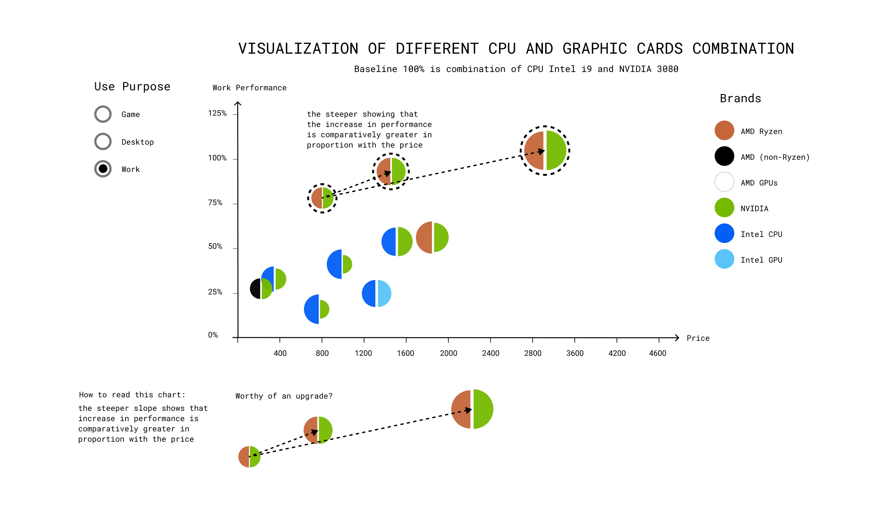

Building my first PC in 2020 (incentivized to play more Dota and Valorant) taught me how
overwhelming and rewarding buiding your first computer is. Choosing the right component, price, and
configurations for your needs is non-trivial, especially for first time builder like myself. The
experience sparked in me an idea of a PC build visualization to come to aid PC builders, from novice
to enthusiasts.
Fun fact
Read more
Each fall, Intel launches a new processor
model in
the “TickTock” mechanism: a shrinking in processor’s size or introducing a new processor.
That’s
a
lot models to compare and contrast.
Data
The data is scraped from from UserBenchmark.com, and while
the data was
debated by many on its accuracy, having a 1K observation dataset would be a good material for a
visualization for future visualizer to base off of.
Users
The visualization aims to help different PC builders to choose the right parts and decide whether an
upgrade of worthy of price increase
(coding, graphic design…), gaming, and desktop (aka light office use). We focus
on the price and performance of each build and figure out a UI/data point design to make comparison
easy.
Approach
Experimenting with
different
visualization tools and design choices give us a quick glance at the dataset and the visual types
that will be suitable.
Through each iteration, the data
point
is
re-designed for a better approach that caters to the users’ goal: being able to compare among
different builds. The exploration steps are:
Tableau for quick, exploratory viz to gauge a sense of the data
Python seaborn for more processing and explored with heatmap
Used sketching and R Studio to explore with chord diagram
Finally, I
gathered
the
pros and cons of the previous viz, talked to another dataviz expert, read books, and
resketched, wireframed and implemented the interactive visualization with Figma and D3.js
Visualization methods
A brief walk down Tableau
My first exploration with Tableau is to use
scatterplot, treemap and heatmap to see how easy it is for comparison and contrast. The
scatterplot
is
great for compare and contrast combos with two types of ratings (2 numerical + 2 categorical
variables).
Scatterplot

The scatterplot has an advantage that it puts the CPU and GPU next to each other, and allow us to
plot 2 types of ratings (so 2 numerical + 2 categorical variables). The names being sorted are also
very convenient, since users can see the marginal performance increase of each combo (and at time,
regression,
that
using a more modern piece doesn't necessarily improve performance)
Heatmap

The heatmap is great on highlighting the
rating
differences as numbers are juxtaposed, but the eye movement to trace from the rating to the
parts’
names
vertically and horizontally can be extra cognitive load on the users.
Both of these plots have values to add to the
final
design: while the scatterplot enhances pairing by having the part names next to each other, the
heatmap
has the numerical data side-by-side. I thought of enhancing the pairing design with chord
diagram,
but
while it’s a cool type of chart, the cognitive load to match pair to pair will also not be
suitable
for
our purpose.
Iteration with chord diagram in RStudio

Besides visualizing rating, I thought it might be helpful to users to have a general suggestion
chart that shows the most commonly used GPU-CPU pairs.
Chord diagram as this type of chart is great for bipartite and directional relationships. However,
this type of chart gets tangled up quickly, so
limiting the number of relationships to display or allow users to switch in/out the pairs might
reduce the visual complexity.
The demo is done in R using dplyr package and chorddiag package for
visualization.
Redesign with Figma and D3.js
In the last iteration of the visualization, I aim to strengthen the UI learned from visualizations
before. To enhance comparison, I thought of a simple idea in Mathematics, which is the rate of
increase is related to the slope of two datapoints:

sketches to explore how to see price/performance increase with each builders
The next step was to design a datapoint that reflects a combination of CPU-GPU. Using
two circles with different radius to reflect rating would work, however, the datapoint's components
looks a bit detached from each other, and making a full circle might not be necessary.

I utilized the Gestalt principle of proximity (that objects positioned close are associated with
each other), and decided to reduce the circle by half to save space and increase association of each
build.

Prototype in Figma.
For the look and feel of the dashboard, I decided to use more "airy," digital-looking font to match
the
theme. For colors, of each data point, I use the brand colors of manufacturers with some curation
(e.g.
choosing among several colors used by the brand) to
provide better contrast.
Final produt
Play with the final product here. After fully
visualizing the dataset, I added the zoom feature as the datapoints can be very close to each other,
unlike
in our simplified version from the design.
For iterations
The current UI/Dashboard still needs refreshing whenever the viewport changes (i.e. when users resize
the
browser window). One possible way to tackle this is either to refactor the project to React and use
useRef to modify the svg dashboard's dimensions and scales, but also possibly to just add an event
listener to the window with javascript and redo the scale accordingly.